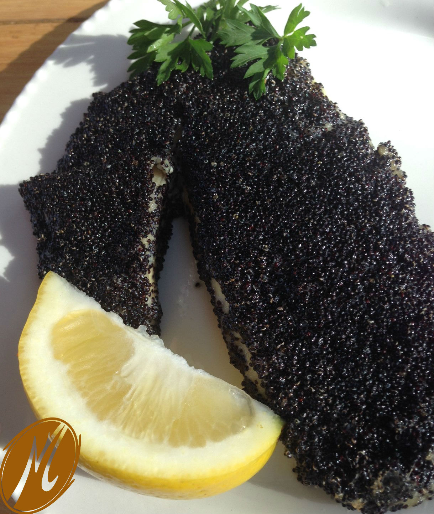

This cranberry chicken recipe brings festive flair with vibrant cranberries and golden-brown chicken, making it a stunning centerpiece for holiday gatherings—yet easy enough for a weeknight dinner.
Quickly searing the chicken for crispy skin adds a bit of time but makes a flavorful difference. Layered with carrots, celery, and a savory mix of garlic, lemon, rosemary, and paprika, this dish practically cooks itself in the oven.
The cranberries soak up the delicious drippings, creating a rich sauce perfect for serving with crusty bread or rosemary focaccia.

TBlackened fish is a flavorful dish where fish fillets are coated with a blend of spices, typically including paprika, cayenne, garlic powder, thyme, and oregano, then seared at high heat.
The intense heat creates a dark, crispy crust that’s packed with smoky, spicy flavors, while keeping the fish tender and juicy inside.
Originally popularized in Cajun and Creole cuisine, blackened fish is known for its bold, savory taste and is often served with sides like rice, vegetables, or a refreshing citrus slaw.

A great pho soup begins with a rich, flavorful beef broth infused with charred aromatics, a touch of sugar, and the umami depth of fish sauce.
The key to authentic pho lies in these charred spices and aromatics, which create the distinct taste that sets pho apart from regular beef noodle soup.
While traditional pho is made with bones, using a cheap cut of meat, like rib finger meat, can achieve an incredible depth of flavor and texture.
This cut offers the perfect balance of connective tissue, fat, and meat, adding richness to the broth and ensuring nothing goes to waste when the soup is done.